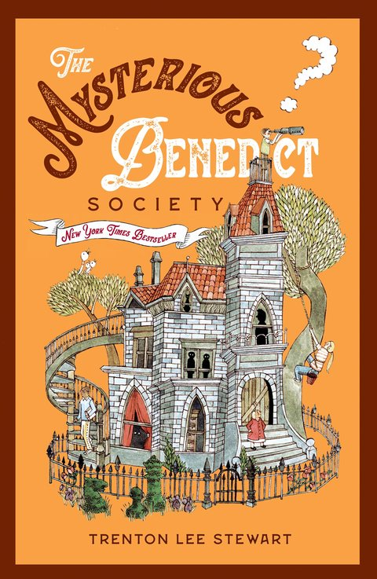

Summary
The Mysterious Benedict Society is a book that I really like about some children who have to infiltrate an evil school to stop people from watching too much TV. I really like this book because all of the children have special gifts. For example, a boy named Sticky remembers everything that he has ever read. In addition, a girl named Kristi who once worked in a circus, has extreme physical capabilities like high jumping, great balance, and buff muscles. Some things I like about this book are the fact that the main characters are only 9 years old but are already extremely smart. I think that if any of these kids existed in the real world, then they would revolutionize it.
What I Learned
There is a disese called narcolepsy that makes people fall asleep when they experience strong emotions. I wish that when people were mad at me, I could just fall asleep and wake up when they have cooled down.
My Rating
⭐⭐⭐⭐1/2
Favorite Quote
"You must remember, family is often born of blood, but it doesn't depend on blood. Nor is it exclusive of friendship. Family members can be your best friends, you know. And best friends, whether or not they are related to you, can be your family." (p.257).← Back to My Library